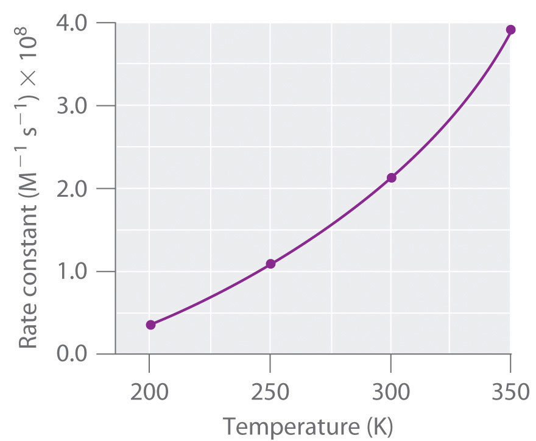
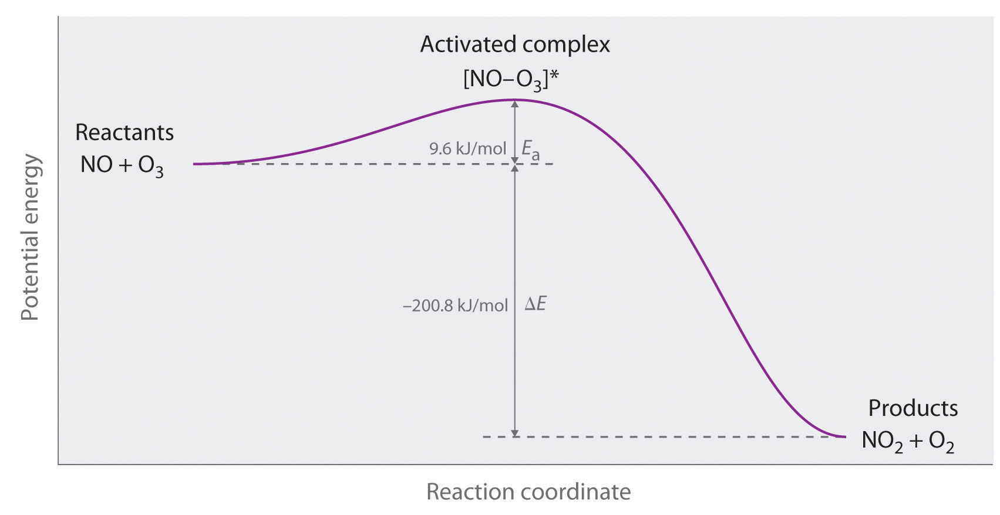
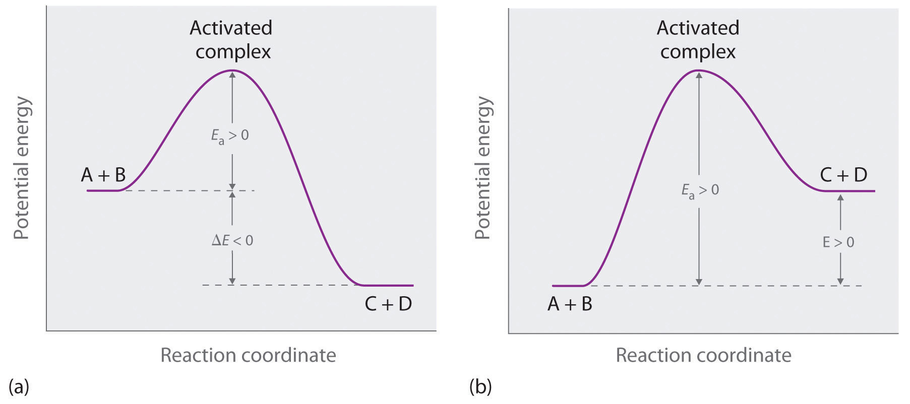
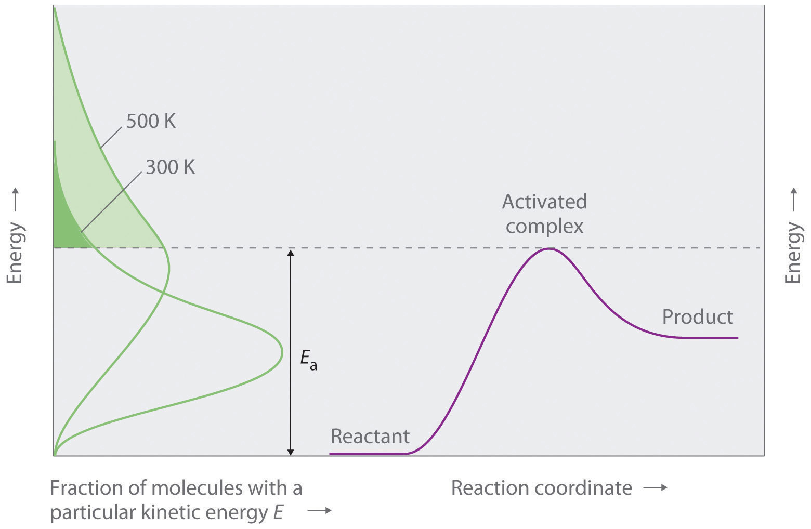
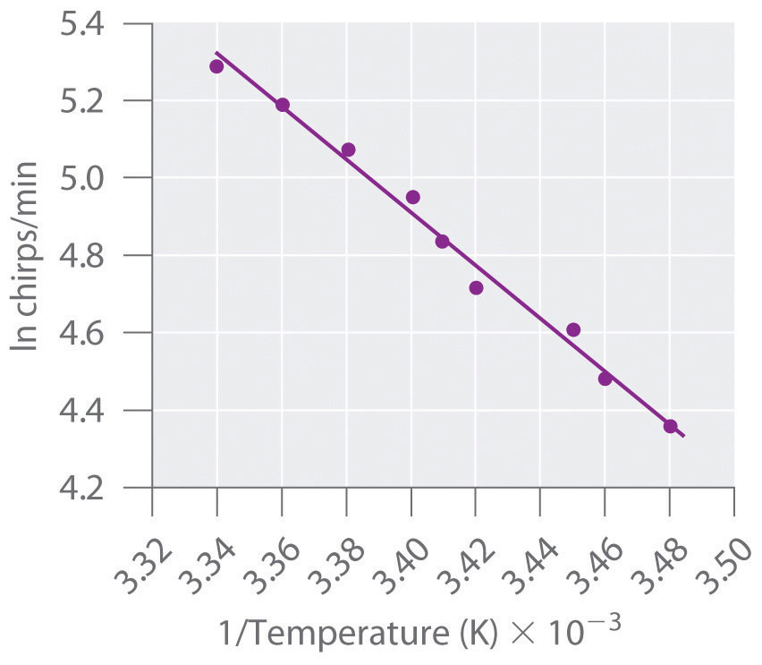

In Section 14.6 "Reaction Rates—A Microscopic View", you saw that it is possible to use kinetics studies of a chemical system, such as the effect of changes in reactant concentrations, to deduce events that occur on a microscopic scale, such as collisions between individual particles. Such studies have led to the collision model of chemical kinetics, which is a useful tool for understanding the behavior of reacting chemical species. According to the collision model, a chemical reaction can occur only when the reactant molecules, atoms, or ions collide with more than a certain amount of kinetic energy and in the proper orientation. The collision model explains why, for example, most collisions between molecules do not result in a chemical reaction. Nitrogen and oxygen molecules in a single liter of air at room temperature and 1 atm of pressure collide about 1030 times per second. If every collision produced two molecules of NO, the atmosphere would have been converted to NO and then NO2 a long time ago. Instead, in most collisions, the molecules simply bounce off one another without reacting, much as marbles bounce off each other when they collide. The collision model also explains why such chemical reactions occur more rapidly at higher temperatures. For example, the reaction rates of many reactions that occur at room temperature approximately double with a temperature increase of only 10°C. In this section, we will use the collision model to analyze this relationship between temperature and reaction rates.
In Chapter 10 "Gases", we discussed the kinetic molecular theory of gases, which showed that the average kinetic energy of the particles of a gas increases with increasing temperature. Because the speed of a particle is proportional to the square root of its kinetic energy, increasing the temperature will also increase the number of collisions between molecules per unit time. What the kinetic molecular theory of gases does not explain is why the reaction rate of most reactions approximately doubles with a 10°C temperature increase. This result is surprisingly large considering that a 10°C increase in the temperature of a gas from 300 K to 310 K increases the kinetic energy of the particles by only about 4%, leading to an increase in molecular speed of only about 2% and a correspondingly small increase in the number of bimolecular collisions per unit time.
The collision model of chemical kinetics explains this behavior by introducing the concept of activation energy (Ea)The energy barrier or threshold that corresponds to the minimum amount of energy the particles in a reaction must have to react when they colllide.. We will define this concept using the reaction of NO with ozone, which plays an important role in the depletion of ozone in the ozone layer:
Equation 14.37
NO(g) + O3(g) → NO2(g) + O2(g)Increasing the temperature from 200 K to 350 K causes the rate constant for this particular reaction to increase by a factor of more than 10, whereas the increase in the frequency of bimolecular collisions over this temperature range is only 30%. Thus something other than an increase in the collision rate must be affecting the reaction rate.
The reaction rate, not the rate constant, will vary with concentration. The rate constant, however, does vary with temperature. Figure 14.20 "Rate Constant versus Temperature for the Reaction of NO with O" shows a plot of the rate constant of the reaction of NO with O3 at various temperatures. The relationship is not linear but instead resembles the relationships seen in graphs of vapor pressure versus temperature (Chapter 11 "Liquids") and of conductivity versus temperature (Chapter 12 "Solids"). In all three cases, the shape of the plots results from a distribution of kinetic energy over a population of particles (electrons in the case of conductivity; molecules in the case of vapor pressure; and molecules, atoms, or ions in the case of reaction rates). Only a fraction of the particles have sufficient energy to overcome an energy barrier.
Figure 14.20 Rate Constant versus Temperature for the Reaction of NO with O3
The nonlinear shape of the curve is caused by a distribution of kinetic energy over a population of molecules. Only a fraction of the particles have enough energy to overcome an energy barrier, but as the temperature is increased, the size of that fraction increases.
In the case of vapor pressure, particles must overcome an energy barrier to escape from the liquid phase to the gas phase. This barrier corresponds to the energy of the intermolecular forces that hold the molecules together in the liquid. In conductivity, the barrier is the energy gap between the filled and empty bands. In chemical reactions, the energy barrier corresponds to the amount of energy the particles must have to react when they collide. This energy threshold, called the activation energy, was first postulated in 1888 by the Swedish chemist Svante Arrhenius (1859–1927; Nobel Prize in Chemistry 1903). It is the minimum amount of energy needed for a reaction to occur. Reacting molecules must have enough energy to overcome electrostatic repulsion, and a minimum amount of energy is required to break chemical bonds so that new ones may be formed. Molecules that collide with less than the threshold energy bounce off one another chemically unchanged, with only their direction of travel and their speed altered by the collision. Molecules that are able to overcome the energy barrier are able to react and form an arrangement of atoms called the activated complexAlso called the transition state, the arrangement of atoms that first forms when molecules are able to overcome the activation energy and react. or the transition stateAlso called the activated complex, the arrangement of atoms that first forms when molecules are able to overcome the activation energy and react. of the reaction. The activated complex is not a reaction intermediate; it does not last long enough to be detected readily.
Any phenomenon that depends on the distribution of thermal energy in a population of particles has a nonlinear temperature dependence.
We can graph the energy of a reaction by plotting the potential energy of the system as the reaction progresses. Figure 14.21 "Energy of the Activated Complex for the NO–O" shows a plot for the NO–O3 system, in which the vertical axis is potential energy and the horizontal axis is the reaction coordinate, which indicates the progress of the reaction with time. The activated complex is shown in brackets with an asterisk. The overall change in potential energy for the reaction (ΔE) is negative, which means that the reaction releases energy. (In this case, ΔE is −200.8 kJ/mol.) To react, however, the molecules must overcome the energy barrier to reaction (Ea is 9.6 kJ/mol). That is, 9.6 kJ/mol must be put into the system as the activation energy. Below this threshold, the particles do not have enough energy for the reaction to occur.
Figure 14.21 Energy of the Activated Complex for the NO–O3 System
The diagram shows how the energy of this system varies as the reaction proceeds from reactants to products. Note the initial increase in energy required to form the activated complex.
Part (a) in Figure 14.22 "Differentiating between " illustrates the general situation in which the products have a lower potential energy than the reactants. In contrast, part (b) in Figure 14.22 "Differentiating between " illustrates the case in which the products have a higher potential energy than the reactants, so the overall reaction requires an input of energy; that is, it is energetically uphill, and ΔE > 0. Although the energy changes that result from a reaction can be positive, negative, or even zero, in all cases an energy barrier must be overcome before a reaction can occur. This means that the activation energy is always positive.
Figure 14.22 Differentiating between Ea and ΔE
The potential energy diagrams for a reaction with (a) ΔE < 0 and (b) ΔE > 0 illustrate the change in the potential energy of the system as reactants are converted to products. Ea is always positive. For a reaction such as the one shown in (b), Ea must be greater than ΔE.
For similar reactions under comparable conditions, the one with the smallest Ea will occur most rapidly.
Whereas ΔE is related to the tendency of a reaction to occur spontaneously, Ea gives us information about the reaction rate and how rapidly the reaction rate changes with temperature. (For more information on spontaneous reactions, see Chapter 18 "Chemical Thermodynamics".) For two similar reactions under comparable conditions, the reaction with the smallest Ea will occur more rapidly.
Even when the energy of collisions between two reactant species is greater than Ea, however, most collisions do not produce a reaction. The probability of a reaction occurring depends not only on the collision energy but also on the spatial orientation of the molecules when they collide. For NO and O3 to produce NO2 and O2, a terminal oxygen atom of O3 must collide with the nitrogen atom of NO at an angle that allows O3 to transfer an oxygen atom to NO to produce NO2 (Figure 14.23 "The Effect of Molecular Orientation on the Reaction of NO and O"). All other collisions produce no reaction. Because fewer than 1% of all possible orientations of NO and O3 result in a reaction at kinetic energies greater than Ea, most collisions of NO and O3 are unproductive. The fraction of orientations that result in a reaction is called the steric factor (p)The fraction of orientations of particles that result in a chemical reaction., and, in general, its value can range from 0 (no orientations of molecules result in reaction) to 1 (all orientations result in reaction).
Figure 14.23 The Effect of Molecular Orientation on the Reaction of NO and O3

Most collisions of NO and O3 molecules occur with an incorrect orientation for a reaction to occur. Only those collisions in which the N atom of NO collides with one of the terminal O atoms of O3 are likely to produce NO2 and O2, even if the molecules collide with E > Ea.
Figure 14.24 "Surmounting the Energy Barrier to a Reaction" shows both the kinetic energy distributions and a potential energy diagram for a reaction. The shaded areas show that at the lower temperature (300 K), only a small fraction of molecules collide with kinetic energy greater than Ea; however, at the higher temperature (500 K) a much larger fraction of molecules collide with kinetic energy greater than Ea. Consequently, the reaction rate is much slower at the lower temperature because only a relatively few molecules collide with enough energy to overcome the potential energy barrier.
Figure 14.24 Surmounting the Energy Barrier to a Reaction
This chart juxtaposes the energy distributions of lower-temperature (300 K) and higher-temperature (500 K) samples of a gas against the potential energy diagram for a reaction. Only those molecules in the shaded region of the energy distribution curve have E > Ea and are therefore able to cross the energy barrier separating reactants and products. The fraction of molecules with E > Ea is much greater at 500 K than at 300 K, so the reaction will occur much more rapidly at 500 K.
For an A + B elementary reaction, all the factors that affect the reaction rate can be summarized in a single series of relationships:
rate = (collision frequency)(steric factor)(fraction of collisions with E > Ea)where
Equation 14.38
rate = k[A][B]Arrhenius used these relationships to arrive at an equation that relates the magnitude of the rate constant for a reaction to the temperature, the activation energy, and the constant, A, called the frequency factorA constant in the Arrhenius equation, it converts concentrations to collisions per second.:
Equation 14.39
The frequency factor is used to convert concentrations to collisions per second.Because the frequency of collisions depends on the temperature, A is actually not constant. Instead, A increases slightly with temperature as the increased kinetic energy of molecules at higher temperatures causes them to move slightly faster and thus undergo more collisions per unit time. Equation 14.39 is known as the Arrhenius equationAn expression that summarizes the collision model of chemical kinetics: and summarizes the collision model of chemical kinetics, where T is the absolute temperature (in K) and R is the ideal gas constant [8.314 J/(K·mol)]. Ea indicates the sensitivity of the reaction to changes in temperature. The reaction rate with a large Ea increases rapidly with increasing temperature, whereas the reaction rate with a smaller Ea increases much more slowly with increasing temperature.
If we know the reaction rate at various temperatures, we can use the Arrhenius equation to calculate the activation energy. Taking the natural logarithm of both sides of Equation 14.39,
Equation 14.40
Equation 14.40 is the equation of a straight line, y = mx + b, where y = ln k and x = 1/T. This means that a plot of ln k versus 1/T is a straight line with a slope of −Ea/R and an intercept of ln A. In fact, we need to measure the reaction rate at only two temperatures to estimate Ea.
Knowing the Ea at one temperature allows us to predict the reaction rate at other temperatures. This is important in cooking and food preservation, for example, as well as in controlling industrial reactions to prevent potential disasters. The procedure for determining Ea from reaction rates measured at several temperatures is illustrated in Example 13.
Many people believe that the rate of a tree cricket’s chirping is related to temperature. To see whether this is true, biologists have carried out accurate measurements of the rate of tree cricket chirping (f) as a function of temperature (T). Use the data in the following table, along with the graph of ln[chirping rate] versus 1/T in Figure 14.25 "Graphical Determination of ", to calculate Ea for the biochemical reaction that controls cricket chirping. Then predict the chirping rate on a very hot evening, when the temperature is 308 K (35°C, or 95°F).
| Frequency (f; chirps/min) | ln f | T (K) | 1/T (K) |
|---|---|---|---|
| 200 | 5.30 | 299 | 3.34 × 10−3 |
| 179 | 5.19 | 298 | 3.36 × 10−3 |
| 158 | 5.06 | 296 | 3.38 × 10−3 |
| 141 | 4.95 | 294 | 3.40 × 10−3 |
| 126 | 4.84 | 293 | 3.41 × 10−3 |
| 112 | 4.72 | 292 | 3.42 × 10−3 |
| 100 | 4.61 | 290 | 3.45 × 10−3 |
| 89 | 4.49 | 289 | 3.46 × 10−3 |
| 79 | 4.37 | 287 | 3.48 × 10−3 |
Given: chirping rate at various temperatures
Asked for: activation energy and chirping rate at specified temperature
Strategy:
A From the plot of ln f versus 1/T in Figure 14.25 "Graphical Determination of ", calculate the slope of the line (−Ea/R) and then solve for the activation energy.
B Express Equation 14.40 in terms of k1 and T1 and then in terms of k2 and T2.
C Subtract the two equations; rearrange the result to describe k2/k1 in terms of T2 and T1.
D Using measured data from the table, solve the equation to obtain the ratio k2/k1. Using the value listed in the table for k1, solve for k2.
Solution:
A If cricket chirping is controlled by a reaction that obeys the Arrhenius equation, then a plot of ln f versus 1/T should give a straight line (Figure 14.25 "Graphical Determination of "). Also, the slope of the plot of ln f versus 1/T should be equal to −Ea/R. We can use the two endpoints in Figure 14.25 "Graphical Determination of " to estimate the slope:
A computer best-fit line through all the points has a slope of −6.67 × 103 K, so our estimate is very close. We now use it to solve for the activation energy:
B If the activation energy of a reaction and the rate constant at one temperature are known, then we can calculate the reaction rate at any other temperature. We can use Equation 14.40 to express the known rate constant (k1) at the first temperature (T1) as follows:
Similarly, we can express the unknown rate constant (k2) at the second temperature (T2) as follows:
C These two equations contain four known quantities (Ea, T1, T2, and k1) and two unknowns (A and k2). We can eliminate A by subtracting the first equation from the second:
Then
D To obtain the best prediction of chirping rate at 308 K (T2), we try to choose for T1 and k1 the measured rate constant and corresponding temperature in the data table that is closest to the best-fit line in the graph. Choosing data for T1 = 296 K, where f = 158, and using the Ea calculated previously,
Thus k308/k296 = 2.4 and k308 = (2.4)(158) = 380, and the chirping rate on a night when the temperature is 308 K is predicted to be 380 chirps per minute.
Exercise
The equation for the decomposition of NO2 to NO and O2 is second order in NO2:
2NO2(g) → 2NO(g) + O2(g)Data for the reaction rate as a function of temperature are listed in the following table. Calculate Ea for the reaction and the rate constant at 700 K.
| T (K) | k (M−1·s−1) |
|---|---|
| 592 | 522 |
| 603 | 755 |
| 627 | 1700 |
| 652 | 4020 |
| 656 | 5030 |
Answer: Ea = 114 kJ/mol; k700 = 18,600 M−1·s−1 = 1.86 × 104 M−1·s−1.
What Ea results in a doubling of the reaction rate with a 10°C increase in temperature from 20° to 30°C?
Answer: about 51 kJ/mol
Figure 14.25 Graphical Determination of Ea for Tree Cricket Chirping
When the natural logarithm of the rate of tree cricket chirping is plotted versus 1/T, a straight line results. The slope of the line suggests that the chirping rate is controlled by a single reaction with an Ea of 55 kJ/mol.
A minimum energy (activation energy, Ea) is required for a collision between molecules to result in a chemical reaction. Plots of potential energy for a system versus the reaction coordinate show an energy barrier that must be overcome for the reaction to occur. The arrangement of atoms at the highest point of this barrier is the activated complex, or transition state, of the reaction. At a given temperature, the higher the Ea, the slower the reaction. The fraction of orientations that result in a reaction is the steric factor. The frequency factor, steric factor, and activation energy are related to the rate constant in the Arrhenius equation: A plot of the natural logarithm of k versus 1/T is a straight line with a slope of −Ea/R.
Although an increase in temperature results in an increase in kinetic energy, this increase in kinetic energy is not sufficient to explain the relationship between temperature and reaction rates. How does the activation energy relate to the chemical kinetics of a reaction? Why does an increase in temperature increase the reaction rate despite the fact that the average kinetic energy is still less than the activation energy?
For any given reaction, what is the relationship between the activation energy and each of the following?
If you are concerned with whether a reaction will occur rapidly, why would you be more interested in knowing the magnitude of the activation energy than the change in potential energy for the reaction?
The product C in the reaction A + B → C + D can be separated easily from the reaction mixture. You have been given pure A and pure B and are told to determine the activation energy for this reaction to determine whether the reaction is suitable for the industrial synthesis of C. How would you do this? Why do you need to know the magnitude of the activation energy to make a decision about feasibility?
Above Ea, molecules collide with enough energy to overcome the energy barrier for a reaction. Is it possible for a reaction to occur at a temperature less than that needed to reach Ea? Explain your answer.
What is the relationship between A, Ea, and T? How does an increase in A affect the reaction rate?
Of two highly exothermic reactions with different values of Ea, which would need to be monitored more carefully: the one with the smaller value or the one with the higher value? Why?
What happens to the approximate rate of a reaction when the temperature of the reaction is increased from 20°C to 30°C? What happens to the reaction rate when the temperature is raised to 70°C? For a given reaction at room temperature (20°C), what is the shape of a plot of reaction rate versus temperature as the temperature is increased to 70°C?
Acetaldehyde, used in silvering mirrors and some perfumes, undergoes a second-order decomposition between 700 and 840 K. From the data in the following table, would you say that acetaldehyde follows the general rule that each 10 K increase in temperature doubles the reaction rate?
| T (K) | k (M−1·s−1) |
|---|---|
| 720 | 0.024 |
| 740 | 0.051 |
| 760 | 0.105 |
| 800 | 0.519 |
Bromoethane reacts with hydroxide ion in water to produce ethanol. The activation energy for this reaction is 90 kJ/mol. If the reaction rate is 3.6 × 10−5 M/s at 25°C, what would the reaction rate be at the following temperatures?
An enzyme-catalyzed reaction has an activation energy of 15 kcal/mol. How would the value of the rate constant differ between 20°C and 30°C? If the enzyme reduced the Ea from 25 kcal/mol to 15 kcal/mol, by what factor has the enzyme increased the reaction rate at each temperature?
The data in the following table are the rate constants as a function of temperature for the dimerization of 1,3-butadiene. What is the activation energy for this reaction?
| T (K) | k (M−1·min−1) |
|---|---|
| 529 | 1.4 |
| 560 | 3.7 |
| 600 | 25 |
| 645 | 82 |
The reaction rate at 25°C is 1.0 × 10−4 M/s. Increasing the temperature to 75°C causes the reaction rate to increase to 7.0 × 10−2 M/s. Estimate Ea for this process. If Ea were 25 kJ/mol and the reaction rate at 25°C is 1.0 × 10−4 M/s, what would be the reaction rate at 75°C?
The reaction rate will approximately double: 20°C to 30°C, the reaction rate increases by about 21 = 2; 20°C to 70°C, the reaction rate increases by about 25 = 32-fold. A plot of reaction rate versus temperature will give an exponential increase: rate ∝ 2ΔT/10.
100 kJ/mol